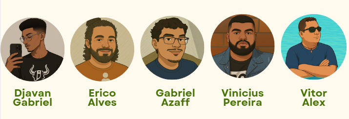

Modernização e Sustentabilidade
Apresentado por:
A Brasil Consultoria nasceu em janeiro de 2022, da união de três profissionais com experiência nas áreas de gestão rural, agronomia e sustentabilidade. Unidos por uma visão comum de transformar o campo brasileiro, criamos uma empresa focada exclusivamente em atender pequenas e médias fazendas, oferecendo soluções práticas, modernas e acessíveis.
Nosso primeiro grande projeto foi iniciado em março de 2025, com consultoria a Fazenda Cecília, localizada no interior do Mato Grosso do Sul. Desde então, temos ajudado propriedades rurais a estruturarem sua gestão financeira, implementarem práticas sustentáveis e explorarem novas oportunidades, como o turismo rural e a produção orgânica.
Hoje, a Brasil Consultoria segue firme no compromisso de impulsionar o desenvolvimento rural, com um atendimento próximo, técnico e feito sob medida para o produtor que quer crescer de forma sustentável.